今年暑假，我家姐姐準備要上小一，妹妹上的公托也放假，突然要每天面對兩位小朋友，只好也把八月份的教室暫停，順便利用這個空檔思考及調整未來上課的模式，而這其中一部份是想讓同學桌面空間及製作效率高一點，因此開始計劃著要再添購一部新的縫紉機。
因為我主要做產品及帆布包，所以一直以來，我都推薦比較實用及性能導向的縫紉機，強調多功能及花樣的縫紉機我通常不太使用，若是高階機型的話，首推就是仿工業用的直線機種，工作室現役的仿工業車是Juki 2010Q，偶爾會有同學對這部車的性能相當感興趣，但以它超過4萬的價格，的確對一般手作人來說較具有壓力。
所以，我想再幫大家找來一部功能及性能都相當，但價格親民許多的JANOME 1600PQC來給大家玩玩，也許會受到這個價格區間和性能要求的人所喜愛。
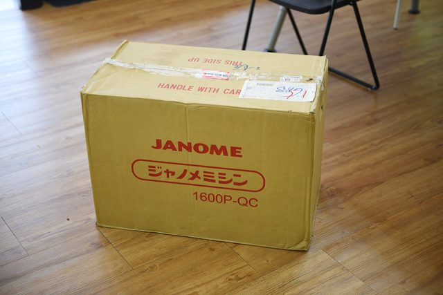
工作室再度來到一位重量級新成員報到啦！
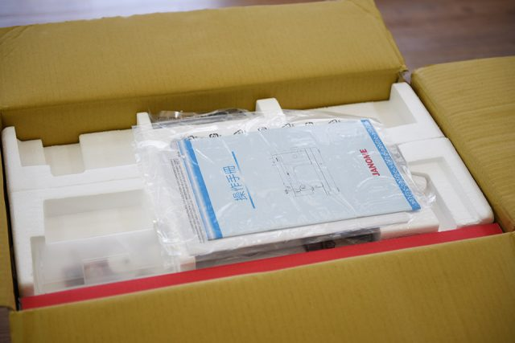
有中文手冊。
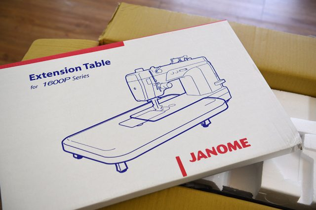
高檔車肯定是會附輔助桌的。
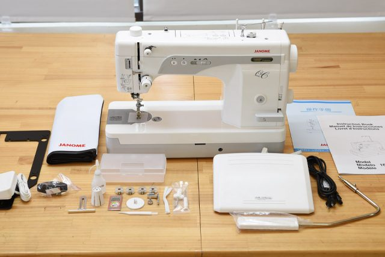
開箱完成，先來個團體照。
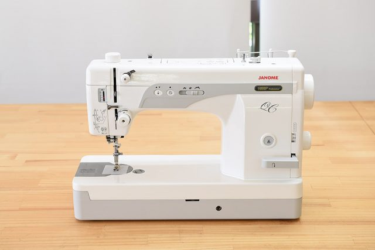
機身的獨照，機身的配色讓我亮眼，有別於以往看到的1600P的藍色和紫色，1600P-QC第二配色採用的是低調的淺灰色，我個人非常喜歡，看起來更有質感及專業，整體造型簡潔俐落。另一個有趣的發現，整部機身的說明及按鈕都沒有出現任何的文字，完全使用圖示來說明，簡單明瞭，設計功力高明。
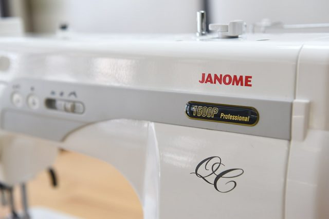
整體舒舒服服的白灰色調，配上正整機唯一正紅色的JANOME LOGO，顯的特別有設計感，1600P一旁寫著 Professional，直接宣示它專業級的位階。
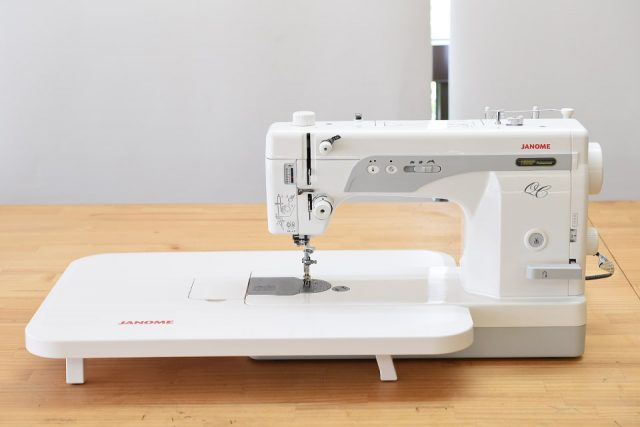
加上超級大的輔助桌，好用且比例剛剛好。
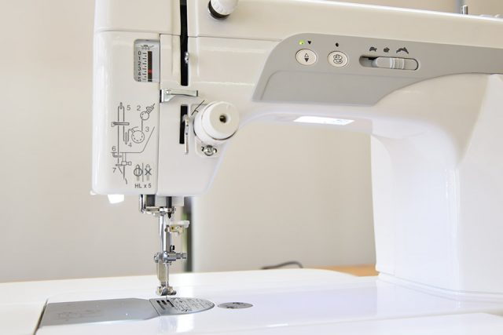
有兩大顆的LED照明，光線相當充足
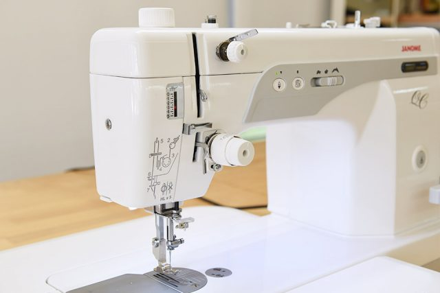
仿工業車才有的導線設計，完整的張力調節旋鈕，更能應付各種軟硬厚簿的布種。仿工業車的穿線是與工業車相似，但跟家用車相比，比較複雜一些，機身上很貼心的有圖示說明。
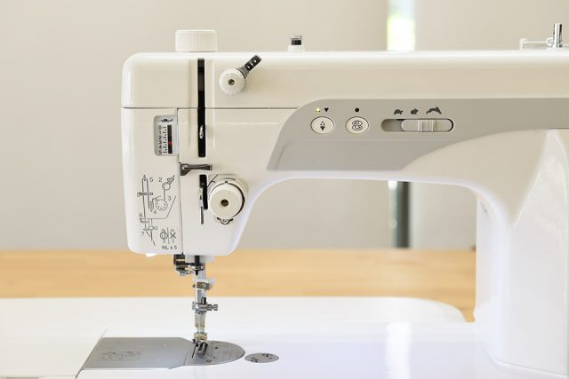
定針，控速的按鍵在中央位置，上/下停針可自由設定，希望停針時針是在上還是在下，都可自由選定，是相當實用且貼心的設計。
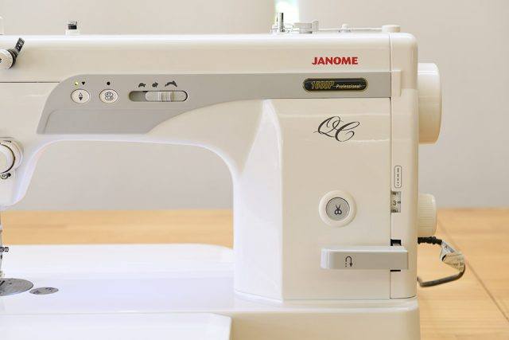
針距、回針把手及自動剪線則配置在右側，算是工業用的車型比較慣用的位置，可左手準備取布，右手同時做迴針及剪線。迴針把手很大，對於講求速度的車縫很重要，你的視線可放在壓腳和布上，右手一摸即可控制迴針。
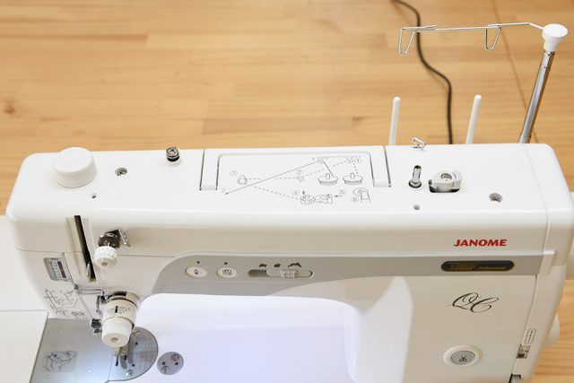
上方的導線位置，車線的導線可上下伸縮，用大捲的車線，只要將它拉高即可，自動捲動的設計也很棒，它有獨立的走線槽，你可不必移除原本的車線，就能直接完成底線的補充。
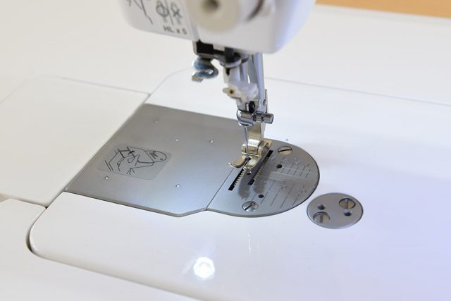
工業車慣有的金屬小壓腳，壓腳可以將布壓的很緊，原廠數據有近5KG的壓力。
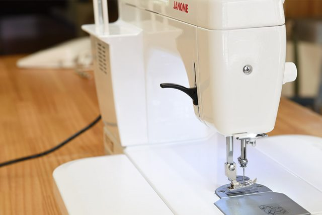
後方的壓腳抬起把手比一般的家用車還大，使用的效率更高。
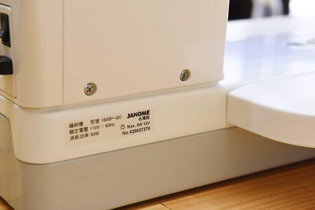
台灣製造
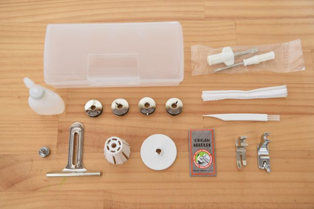
原廠附的壓腳及配件。
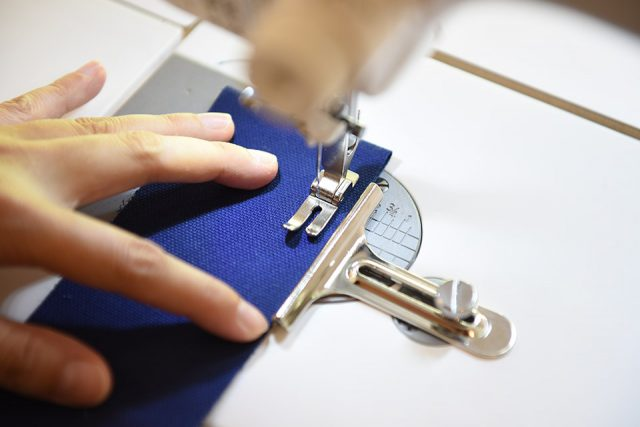
隨機贈送的車縫導引板很方便，尤其對於新手來說，可以更輕鬆的掌控縫份，讓你車線直一點。
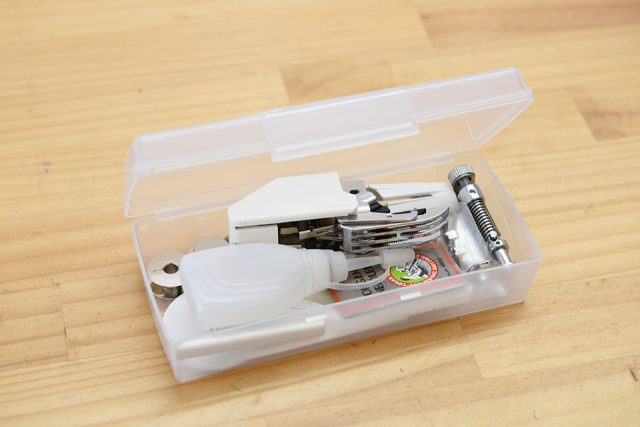
附贈的整理盒容量夠大，常用的壓腳和配件都能統統放進去。
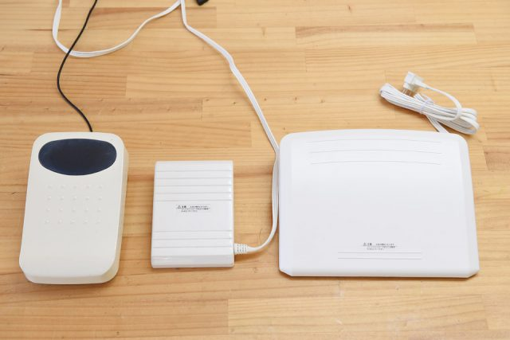
Janome 1600P-QC最讓人驚奇的是它的腳踏板(最右)，面積相當的寬大，相較於左邊Juki 2010Q用的腳踏板，中間Janome 5031S的腳踏板要大上2倍以上。
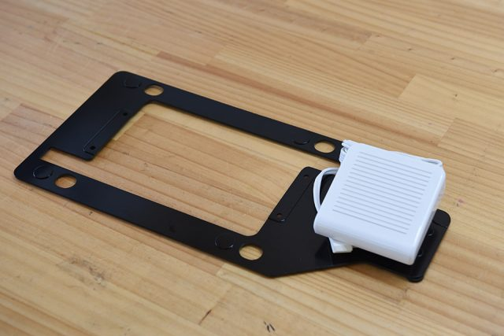
自動剪線有獨立的腳控踏板，還連接著一片金屬板，做為連結控速腳踏板用。
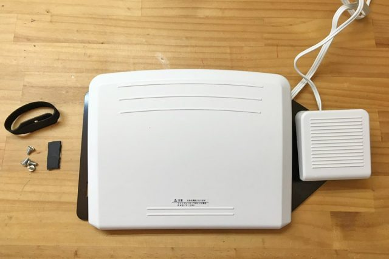
結合後的樣子。還有附贈螺絲，實在很貼心。
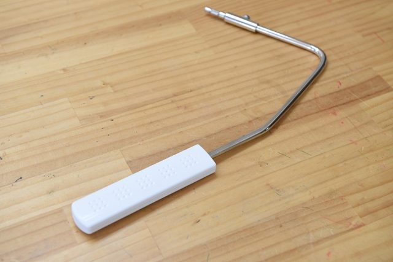
膝抬桿的質感不錯。
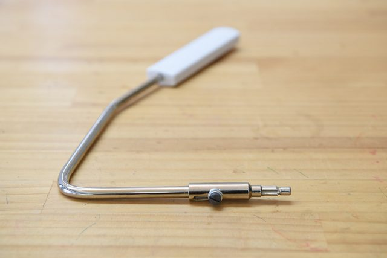
膝抬桿可以依個人習慣與身材不同，調整適合的角度。
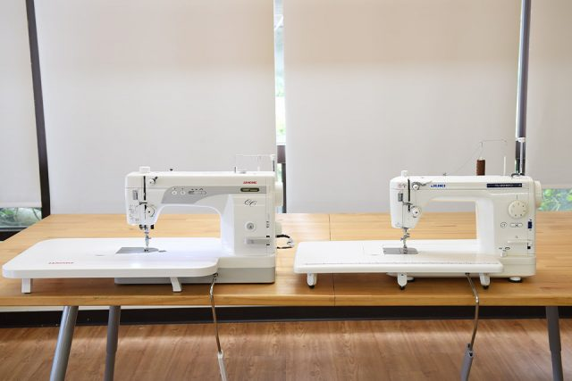
Janome 1600P 與 Juki 2010Q 的合照，1600P-QC整體要比2010Q大一些些。
Part2 專用桌開箱
才用了一週，我又敗了專用桌
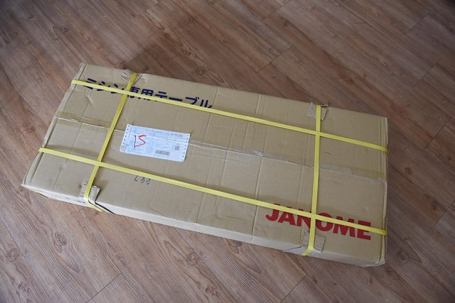
專用桌寄來嘍，採用跟IKEA相同的平整化包裝，尺寸為115x50x17cm，如果暫時不使用，收納起來還算不太佔地方。
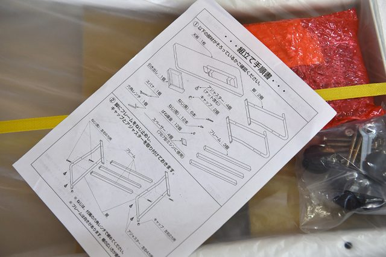
說明書是日文的，圖示很清楚，其實常組裝IKEA的東西，這個才兩步驟真的算小CASE。
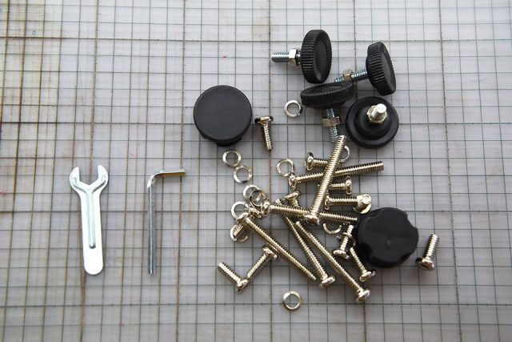
全部的安裝小零件，所需的工具板子都有內附喔
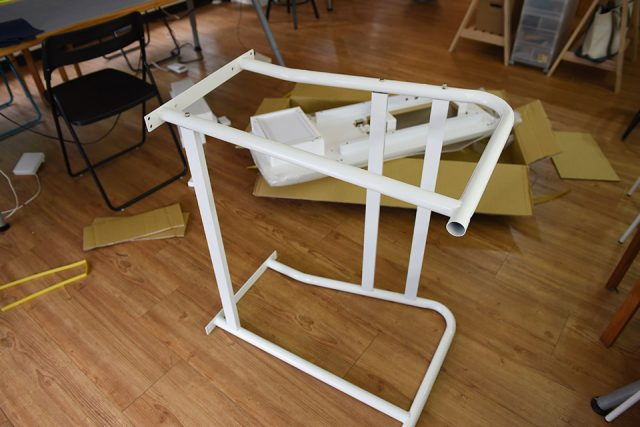
組裝的過程大約20分鐘，先把腳裝起來，只用三顆螺絲，再來將桌板與桌裝固定，用了12顆螺絲就大功告成，鎖螺絲有個小技巧分享，先稍微固定所有的螺絲後，再一次鎖緊，不要每裝一顆就鎖緊一顆，不然最後可能會對不進螺絲孔。
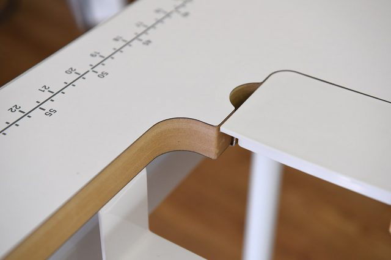
邊裝桌面時邊看仔細看它桌面的質感，其實蠻不錯的。
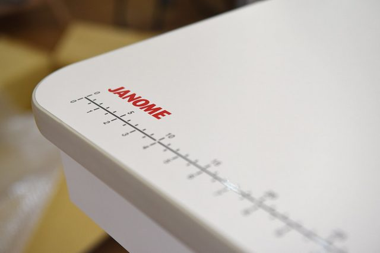
桌面的收邊和印刷質感都很好。
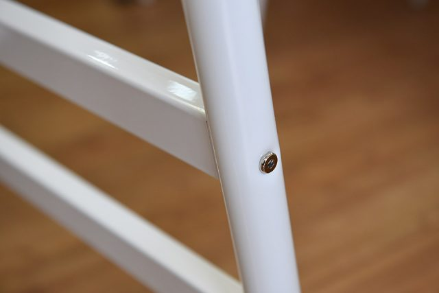
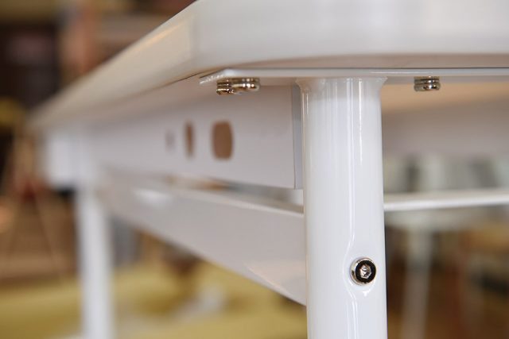
桌腳的烤漆質感也很不錯
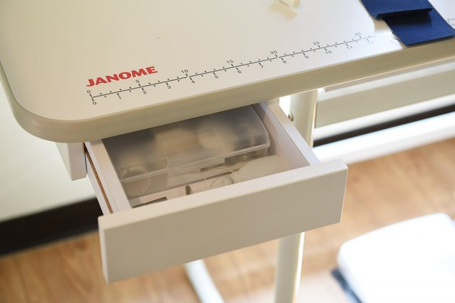
還有一個貼心的小抽屜可以放配件，抽屜寬度剛好可以放原廠附贈的整理盒，設計的很細心喔。
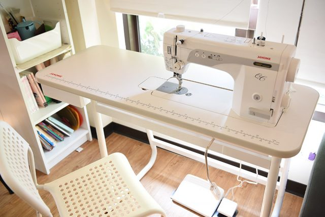
合體完成，專用桌與機身一整體的感覺很棒，如果家中空間允許，我蠻推薦Janome 1600P-QC搭配專用桌來使用，一般來說會購置這等級的縫紉機，使用頻率應該會高一些，且Janome 1600P-QC不輕，不太適合用完就收起來，搬來搬去真的蠻累人的，無論如何你總是要找一張空桌子來放置才會方便。
小小心得
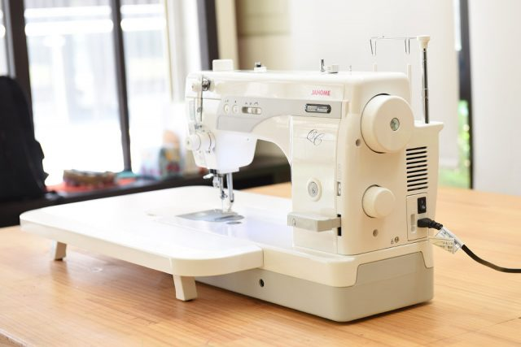
Janome 1600P-QC從箱子取出來時，就給我蠻不錯的第一眼印象，外型雅致耐看，搬出箱子時很有重量感，不管是輔助桌板，或者是腳踏板，都展現出它強調工作效率及穩定性，十足仿工業車的定位。經過幾天的使用下來，1600P-QC 車縫的感覺，不管在速度感、穩定性、馬力上的表現，都與一般家用型的縫紉機有很明顯的差距。
如果你不需要車縫圖案與花樣，想要一部耐操穩定、速度快、馬力強的直線車，或許你更需要追求速度與效率，Janome 1600P-QC提供膝抬、好大的控速腳踏板和腳踏自動剪線、很好按的迴針大把手，讓你車的又快又好的基本實用配備，相信會很符合你的需求。
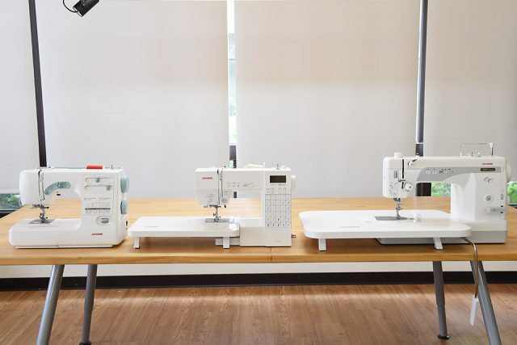
Amy從開始教學以來，工作室刻意放了各種價位的機型讓同學玩，希望幫忙同學懂得挑選最適合自己的縫紉機，因為我希望大家不要只追求貴的設備，要衡量自己的預算和需求，幾年下來實際的使用及同學的反應，Amy幫新手、進階及老手各選了一部比較推薦的機型，不論價位高底，都必須要至少要通過耐用、好車、穩定及美麗外型等標準，分別是左邊的Janome 5031S、Janome 6030及最右邊的Janome1600P-QC，如果你剛好也在苦惱如何選擇，不仿可先從Amy推薦的這幾部去了解看看。
想購買或試車
現在跟Amy購買縫紉機，除了可享價格優惠外，還會再贈送Niizo折價券(可使用於手作課程或材料包)。
> 看各機型價格及贈品
暫不訂購！可填表單留email，將主動通知團購訊息
https://forms.gle/eJ5ErjTgP6EjFdWY8
我們每年會開兩次縫紉機團購，通常會在每年的三月及十月份左右，如果暫不急著訂購的話，可先填寫表單，留下正確的email，有開新的團購會主動通知您喔!

2018/06/21 at 2:06 下午
老師，請問Janome1600P-QC這台可以調整車綘速度嗎??
另外想問如果只是想車綘一些如筆袋、便當袋、防水手提袋等
是要選0Janome1600P-QC還是6030那台呢?
謝謝喔!
2018/08/27 at 11:03 下午
您好～
Janome1600P-QC可以調整車速喔，這台有1600P，是仿工業的直線機，但真的只能車直線，沒有任何的花樣，6030則是有30種花樣的家用縫紉機，這兩台性能和功能不太一樣，但您說的筆袋、便當袋、防水手提袋都是可以勝任，有問題歡迎在問，若有需要也可以寫mail給我，可以幫您代訂，[email protected]
2018/10/17 at 7:42 下午
耘媽您好，
因為您之前有詢問過縫紉機，剛好現在有縫紉機的團購活動，給您參考喔。
/blog/2018/10/15/sewingmachine_event/
2017/12/26 at 2:47 下午
您好Amy ,
我是在澳門的，我想購買 Janome 2106S 縫紉機，購買程序怎樣？另外我想了解有沒有網上課程。
2018/02/05 at 11:26 下午
我有材料包可以自己在家學習，www.niizo.com，訂購後可以使用paypal付款，也會幫您郵寄到澳門，但要自行負擔運費喔～
有問題歡迎在問喔～
2017/07/10 at 5:36 下午
你好，Amy,
我是在香港的，看到你縫紉機的介紹，這台Janome 1600P-QC，是不是可以用於皮革嗎？如果我想購買，購買程序怎樣呢？謝謝你
2017/08/23 at 10:01 下午
Carol您好，這台可以換上皮革針車軟皮，但建議您還是在香港當地購買，也方便將來維修，因為郵寄的風險實在太高了，且運費也貴，給您參考囉，謝謝。
2017/01/15 at 11:44 下午
妳的教室在哪裏，我住在中壢
2017/01/16 at 10:30 下午
愛華您好，我的工作室在三峽，地點在這給您參考/sewingclass/location/
若要試車要先跟我預約時間喔，因為我不一定會在工作室喔，預約請到紛絲團留言給我喔，謝謝。
https://www.facebook.com/niencraft/